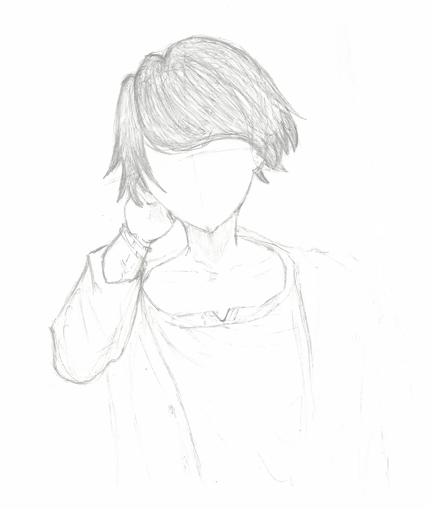
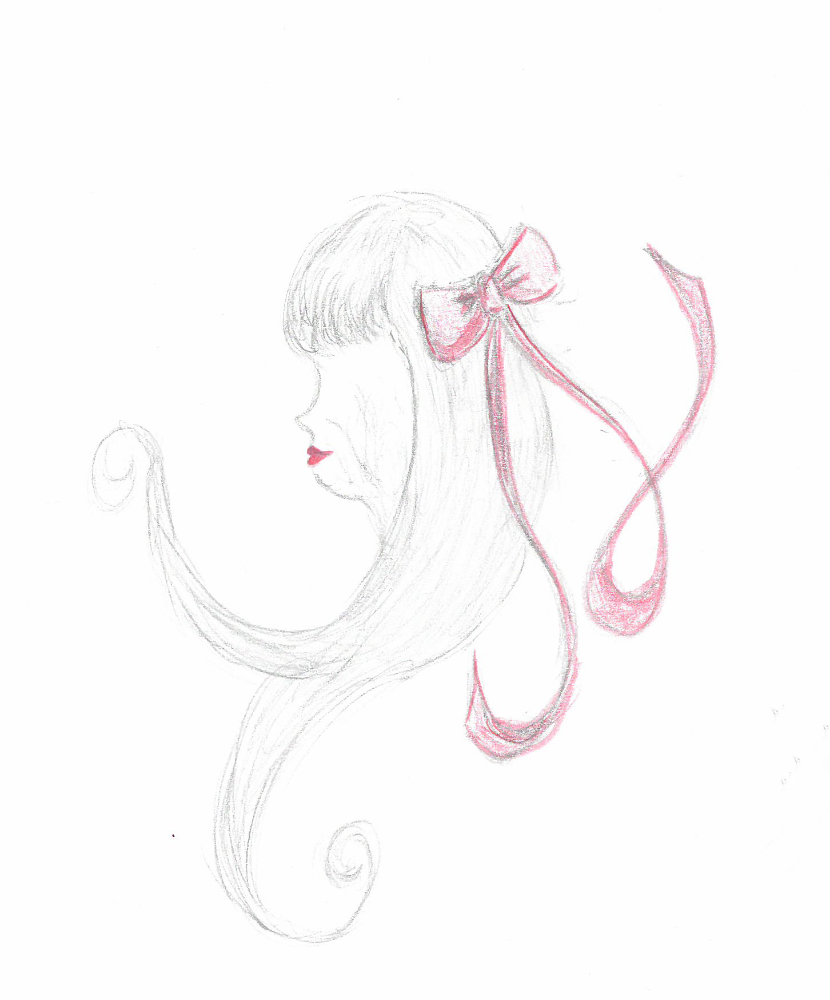
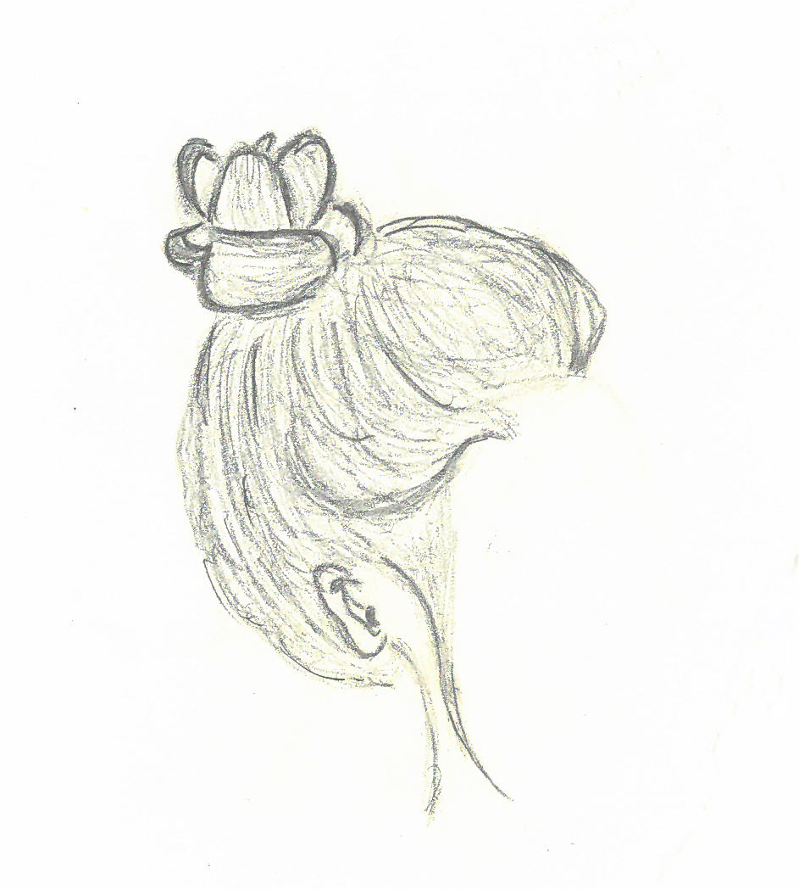

Along with my art style, my inspirations have changed as well. I used to draw whatever I felt like drawing but now, that's what I struggle the most with. I used to be into anime a lot and I had the skill to draw anime or manga. Drawing anime was my inspiration because I was so into the topic at the time. Now, I don't have as much passion for drawing anime as I used to.

Now, my inspiration what's in front of me, whether it be an everyday object or a person. That doesn't mean I can just draw whatever is in front of me.
No, let me rephrase that.
That doesn't mean I can draw what's in front of me with passion. Sure, I can draw a water bottle that's sitting in front of my face but that doesn't mean I enjoy it. It doesn't mean I want to. It's a simple "I can" but not an "I want".
I believe you should draw or paint what you're interested in. If you don't have a motivation to draw, then why should you? Of course, there are those exceptions where it's for a project and you have to draw but what if it's on your free time?

I love drawing what is in front of me because it's like a challenge. Can I draw the texture of the hair in detail? Can I draw the object or person even if they keep moving? It's all a challenge.

Although, I also find it as a learning experience. Do I have the skills to draw the texture of the hair? Do I have the skills to draw a moving object? Do I have to learn more to answer these questions?
It's a difficult challenge, especially when I have the habit of doubting myself too much. Though, I believe I can take risks when it comes to these challenges. I will learn more as I continue to work on drawing textures and moving objects. I look forward to seeing how much I will improve.